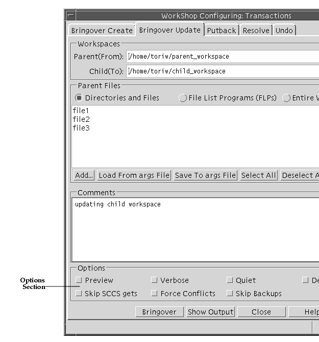
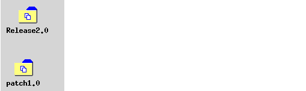
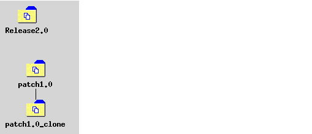
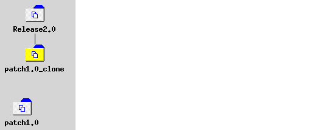
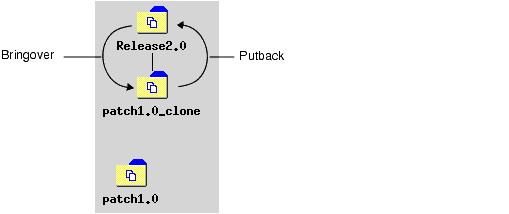
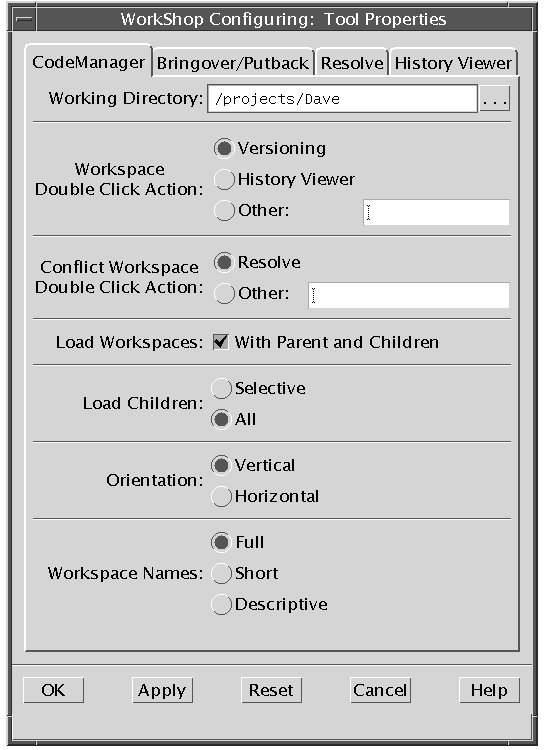

| Sun WorkShop TeamWare User's Guide |
Advanced Workspace Management
To learn basic Configuring tasks, see Chapter 2. This chapter covers these advanced Configuring tasks:
- Using Bringover/Putback Options
- Creating Customized Bringover/Putback File Lists
- Notifying Users of Transactions
- Giving a Workspace a Descriptive Name
- Reparenting a Workspace
- Customizing Configuring Using Tool Properties
- Configuring Environment Variables
- Converting From an RCS Project
Using Bringover/Putback Options
There are two types of options for bringovers/putbacks:
- Options in the Transactions dialog box that are available to you each time you perform a bringover/putback
- Tool properties that you set for all bringovers/putbacks
Setting Options During a Bringover/Putback
To access options during a bringover/putback:
1. In the Configuring window, choose a transaction from the Action Menu:
- Bringover Create
- Bringover Update
- Putback
2. Click a check box in the Options section (see FIGURE 3-1).
FIGURE 3-1 Transactions Dialog Box: Options SectionEach check box in the Options section of the Bringover Create/Bringover Update/Putback tabs in the Transactions dialog box is described in TABLE 3-1.
Setting Tool Property Options
Use the Bringover/Putback Options tab to set options for bringovers and putbacks. To open the Bringover/Putback Options tab, in the Configuring Window:
1. Choose OptionsConfiguring.
2. Select the Bringover/Putback tab.TABLE 3-2 lists the check boxes for the Bringover/Putback Tool Properties.
Creating Customized Bringover/Putback File Lists
Configuring maintains a list of files each time you bring over or put back to a specific workspace. This section explains how Configuring generates a default list of files for bringovers/putbacks and how you can change the default. You can also direct Configuring to generate a list of files to bringover or putback using an FLP (File List Program).
Saving a Default List of Files
Configuring saves the list of files and directories you include when performing a bringover or putback. This list is loaded by default for the next bringover/putback transaction in the same workspace. Each time you perform a bringover/putback, Configuring determines whether the file list is more encompassing than the list from the previous transaction; if the new list is of a wider scope, the new list replaces the old.
You can reload the default list at any time by clicking Load from args File. This is useful if you have made changes to the list that you do not want to save. Use Load List from args File to revert the list to its default state.
If you change the list and want to make the new list the default, click Save to args File. This is useful if you have eliminated files or directories from the list. If you add files, Configuring automatically adds them to the
argsfile as part of a Bringover or Putback transaction.Generating a Customized List of Files
In addition to explicitly specifying individual files for transfer, you can direct Configuring to execute a program to create a customized list of files to bringover/putback.
By default, Sun WorkShop TeamWare generates a list of files to include in a bringover/putback transaction by using File List Program (FLP). The FLP generates a list of files and then passes this list to bringover and putback transactions. Configuring uses a default FLP named
def.dir.flp.The FLPdef.dir.flprecursively lists the names of files that are under SCCS control in directories that you specify in the File List pane. The files generated by this (or any) FLP are included for transfer, in addition to any files that you also specify in the File List pane.If you want to have more control over which files are included in a bringover or putback, you can write your own FLP. You can, for example, include only files with a certain extension, such as html. If you want to use your own FLP(s) during a transaction, you specify them in the File List pane.
To generate your own list of files for a bringover/putback:
1. Write an File List Program (FLP) that creates the list of files you want to bringover/putback.2. In the Bringover/Putback tab, click the File List Programs (FLPs) button.3. Click Add.4. Select your FLP in the Add FLPs dialog box.5. Click Add Files.This sets the FLP for the current transaction only. You can direct Configuring to always use your FLP by setting the
CODEMGR_DIR_FLPenvironment variable. This variable overrides Configuring's default FLP, which is nameddef.dir.flp.
setenv CODEMGR_DIR_FLP /home/workspaces/my.flpIf you use the bringover or putback commands at the command line, use the
-foption to specify an FLP. For more information about using command line commands, see Chapter 11.Notifying Users of Transactions
You can have Configuring automatically send out an email to members of your team each time a transaction occurs in a workspace. The email will contain the transaction type, file names, and transaction comments.
1. Start Configuring.2. Select Workspace3. In the Workspace Properties dialog box, type the name of a workspace.4. Click the Notification tab.5. In the Notification tab, click Create Entry.6. In the Notification Entry dialog box:
- Type an email address in the Mail To text box.
- Select the transactions for which you want to generate an email notification.
- If you want to generate a notification only for certain files in the workspace, click the Specify button.
- Click the Add to List button and select the files you want to include.
- Click Add files.
- Click Cancel to close the Add Files dialog box.
- Click OK in the Notification Entry dialog box.
7. To save the entry, click OK in the Workspace Properties dialog box.Giving a Workspace a Descriptive Name
Often, a workspace name is a long path, such as
/home/src/rel7/ver2. Sun WorkShop TeamWare lets you give a workspace a name that is more meaningful to users, such as "current development area" or "Bob's workspace." The descriptive name is displayed in the Configuring window (when you select ViewYou can also create a detailed description of the workspace for your own use. The detailed description is displayed when you select View
To give a workspace a descriptive name:
1. Start Configuring.2. Choose File3. Load the workspace you want to give a descriptive name.4. Click on the workspace to select it.5. Choose Workspace6. In the Workspace Properties Dialog Box, click the Description tab.7. In the Name text box, type a descriptive name for your workspace.This name appears as a label for the workspace.
8. In the Description text box, type a longer description of your workspace.This information is stored in the
Codemgr_wsdata/descriptionfile.
Note – Clicking Load in the Description tab displays description information from the description file. It does not save any information.
9. Click OK.
- In the Configuring window, choose View
- Use the
workspace descrcommand.
- The syntax is
workspace descr [ -n | -d | -a ] wsname ...
TABLE 3-3lists the options to theworkspace descrcommand.
TABLE 3-3 workspace descrCommand Options-nLists descriptive name only -dLists detailed description only -aLists both descriptive name and detailed description (default) wsnameWorkspace name
For more information about using command line commands, see Chapter 11.Reparenting a Workspace
As discussed in Parent and Child Workspaces, the parent-child relationship is the thread that connects workspaces to each other. Configuring provides the means for you to change this relationship. This section discusses:
Reasons to Change a Workspace's Parent
You can permanently or temporarily change a workspace parent for any of these reasons:
- To populate a new top-level workspace. You have just completed Release 1 of your product and need to begin work on Release 2. You can:
- Create a new (empty) Release 2 workspace (File
- Make the Release 2 workspace the new parent of the Release 1 workspace.
- Use the Putback transaction to copy files to the Release 2 workspace.
- Reparent the Release 1 workspace to its original parent.
- To move a feature into a new release. If a feature intended for a particular release is not completed in time, the workspace in which the feature was being developed can be reparented to the following release's integration workspace.
- To apply a bug fix to multiple releases. The workspace in which work was done to correct a bug is reparented from hierarchy to hierarchy. Use the Configuring Putback transaction to incorporate the changes into the new parent. An example of this use for reparenting is included in A Reparenting Example.
- To reorganize workspace hierarchies. You can:
- Add additional levels to the hierarchy
- Remove levels from the hierarchy (do not specify a new parent during reparenting)
- Reorganize workspace branches within the project hierarchy
- To adopt an orphan workspace. If a file is orphaned (for example, if its
Codemgr_wsdata/parentfile has been deleted or its parent is corrupted), you can use the reparenting feature to restore its parentage.Ways to Reparent Workspaces
There are two equivalent ways to reparent workspaces permanently: using the Reparent command or dragging and dropping workspace icons. You can also change a workspace's parent during a bringover or putback transaction, but this new relationship lasts only for the duration of the transaction.
The Reparent Command
To reparent a workspace using the reparent command:
1. Start Configuring.2. Choose File3. Load the workspace you want to reparent.4. Click on the workspace to select it.5. Choose Workspace6. Type the name of the new parent in the Reparent dialog box.7. Click OK.If you do not specify a parent workspace in the New Parent Workspace Directory text box, the workspace is orphaned--it has no parent. The Workspace Graph pane is automatically adjusted to reflect its new status.
Drag-and-Drop Workspace Icons
You can change a workspace's parent by selecting its icon in the Workspace Graph Pane, pressing the Control key, and dragging it on top of its new parent's icon. You are prompted to confirm the change. The display is automatically adjusted to reflect the new relationship.
You can also "orphan" a workspace by selecting its icon, pressing Control, and dragging it to an open area on the Workspace Graph pane. The workspace no longer has a parent: the display is automatically adjusted to reflect its new status.
Temporary Reparenting
- You can change a child workspace's parent for the duration of a single Bringover Update transaction by specifying the new parent's path name in the From Parent Workspace text field in the Bringover Update tab (Actions
A Reparenting Example
When a bug is fixed in a version of a product, often a patch release is made to distribute the fixed code. The code that was fixed must also be incorporated into the next release of the product as well. If the product is developed using Sun WorkShop TeamWare, the patch can be incorporated relatively simply by means of reparenting.
In the following example, a patch is developed to fix a bug in Release 1.0 of a product. The patch must be incorporated into the Release 2.0 code, which has already begun development.
1. In the Configuring window, you load two workspaces,Release2.0andpatch1.0.
- These workspaces do not have a parent-child relationship (see FIGURE 3-2).
FIGURE 3-2 Two Unrelated Workspaces2. Before you make any changes, make a child of thepatch1.0workspace using a Bringover Create transaction. (see FIGURE 3-3)
FIGURE 3-3 Clone Workspace Created3. Change the parent ofpatch1.0_clonefrompatch1.0toRelease 2.0using the reparent command (see FIGURE 3-4).
FIGURE 3-4 Clone Workspace Reparented to Release2.04. Update thepatch1.0_clonewith a Bringover Update from its new parent,Release2.0(see FIGURE 3-5).
- This includes merging the fixes made for the patch in
patch1.0_clonewith the files fromRelease2.0.5. Put back the changes frompatch1.0_clonetoRelease2.0(FIGURE 3-5).
FIGURE 3-5 Files Brought Over, Merged, and Incorporated into the New Release6. Now that it has served its purpose, you can deletepatch1.0_cloneusing Workspaces.You now have the two unrelated workspaces,
Release2.0,which now includes the fixes frompatch1.0andpatch1.0,which is unchanged from the transactions.Now the patch is available to the children ofRelease2.0(see FIGURE 3-6).
FIGURE 3-6patch1.0_cloneDeleted;Release2.0Includes FixesCustomizing Configuring Using Tool Properties
Using the Tool Properties dialog box (see FIGURE 3-7), you can customize the behavior of:
- Configuring window functions
- Bringover/Putback transactions
- Resolve transaction
- Workspace History Viewer
To open the Tool Properties dialog box, choose Options
The CodeManager tab of the Tool Properties dialog box (see FIGURE 3-7) lets you change the behavior of the Configuring main window. The specific properties are described in TABLE 3-4.

FIGURE 3-7 Tool Properties: CodeManager Tab
TABLE 3-4 Configuring Tool Properties Working Directory Lets you specify the directory to which Configuring actions are relative. Workspace Double Click Action Lets you specify the commands you want launched when you double-click on a standard workspace icon. Select Versioning, History Viewer, or Other and type the path name of a command. The command executes based on the working directory and your search path. The default double-click action is Versioning ( twversion).Conflict Workspace Double Click Action Lets you specify the commands you want launched when you double-click on workspaces that contain conflicts. Type the path name required to execute the commands based on the working directory and your search path. By default, the Resolve Transaction window opens for conflicted workspaces. Load Workspaces Select this check box if you want the parent and children of workspaces you load in the Workspace Graph pane automatically loaded with them. By default this box is not checked. Load Children These radio buttons are active only if you have the Load Workspaces check box checked. Select Selective if you want to specify which child workspaces to load. Select All if you want all children to be loaded. By default, all children are loaded. Orientation Select Vertical if you want workspace hierarchy displayed vertically from top to bottom. Select Horizontal if you want the workspace hierarchy displayed horizontally from left to right in the Workspace Graph pane. Vertical is the default. This property corresponds to the choosing View Workspace Names Changes the format of workspace names. This property corresponds to choosing View Full Displays workspaces labeled with full path names in the Workspace Graph pane. (Default.) Short Displays workspaces labeled with just the file name. Descriptive Displays the descriptive name you have assigned to a workspace. See Giving a Workspace a Descriptive Name. If there is no descriptive name for the workspace, and you select Descriptive name, the file name appears in angled brackets, for example <myworkspace>.
Configuring Environment Variables
This section provides examples of how to use Configuring environment variables:
For information about how to set a default FLP using the
CODEMGR_DIR_FLPvariable, see Generating a Customized List of Files.Loading Workspaces Automatically
You can set the
CODEMGR_WSPATHvariable to a single workspace, a list of workspaces, or to all the workspaces in a directory. To set theCODEMGR_WSPATHvariable to the location of the workspace, type:
setenv CODEMGR_WSPATH /home/ws/myworkspaceTo load more than one workspace, put a list of workspaces in quotes:
setenv CODEMGR_WSPATH "/home/ws/myworkspace /home/ws/anotherws"To load all the workspaces in one directory, set the variable to a directory that contains multiple workspaces. For example:
setenv CODEMGR_WSPATH /home/ws/myworkspacesSetting Focus for Command-Line Commands
The
CODEMGR_WSenvironment variable sets a workspace as the default for command-line commands. Once you set this variable, when you use command-line commands (bringover, putback, freezept extract, and so on) the workspace will be used automatically if you don't specify a workspace with the-woption. To set a default workspace:
setenv CODEMGR_WS /home/workspaces/myworkspaceThis variable also has the effect of loading the workspaces when you start Sun WorkShop TeamWare tools.
For more information about command-line commands, see Chapter 11.
Setting a Search Path
The
CODEMGR_PATH_ONLYenvironment variable lets you dictate where Sun WorkShop TeamWare tools look for other Sun WorkShop TeamWare tools. To set theCODEMGR_PATH_ONLYenvironment variable:
setenv CODEMGR_PATH_ONLY /bin/install/TeamwareIf the
CODEMGR_PATH_ONLYvariable is not set, Sun WorkShop TeamWare looks for other tools in the current directory the tool is in, and then searches in the directories specified in thePATHenvironment variable.Converting From an RCS Project
rcs2wsis a program that produces a Configuring workspace from an RCS (Revision Control System) source hierarchy. It converts a project developed in RCS and works its way down through the hierarchy to convert the RCS files to SCCS.
rcs2wsoperates on RCS files under the parent directory and converts them to SCCS files, then puts the resulting SCCS files into a workspace. If a workspace doesn't exist, it will be created. The parent directory hierarchy is unaffected byrcs2ws.rcs2wssearches directories recursively.To convert files,
rcs2wsinvokes the RCScocommand and the SCCSadmin,get,anddeltacommands.rcs2wsfinds these commands using yourPATHvariable. Ifrcs2wscannot find the SCCS commands, it looks for them in the/usr/ccs/bindirectory.
Note –rcs2wsrequires that you have the RCS utility. If you get the error "command not found," make sure you have RCS and that the location of RCS is set in yourPATH.
rcs2wsdoes not convert RCS keywords to SCCS keywords. Keywords are treated as text in the SCCS delta.The basic syntax of
rcs2wsis:
rcs2ws -p[RCS_source_dir]-w[teamware_workspace] [files |directory]
- The
-poption names the RCS source directory and is required. Relative file names are interpreted as being relative to RCS_source_dir.- The
-woption names the TeamWare workspace. If the workspace does not exist, using the -w option will create a workspace. The -w is optional if the workspace already exists and it is your default workspace, or if the current directory is contained within an existing TeamWare workspace.For example, if you want to convert the RCS project
/projects/prodA/release1into a new TeamWare workspace/tw/workspaces/dev1, type:
rcs2ws -p /projects/prodA -w /tw/workspaces/dev1 release1If the workspace
/tw/workspaces/dev1already exists and it is your default workspace, you could type:
rcs2ws -p /projects/prodA release1Use "." to specify that every RCS file under RCS_source_dir should be converted. For example, if you want to convert all the RCS files in the project directory
/projects/prodA, type:
rcs2ws -p /projects/prodA .To see a complete list of
rcs2wsoptions, see thercs2ws(1)man page.
|
Sun Microsystems, Inc. Copyright information. All rights reserved. Feedback |
Library | Contents | Previous | Next | Index |